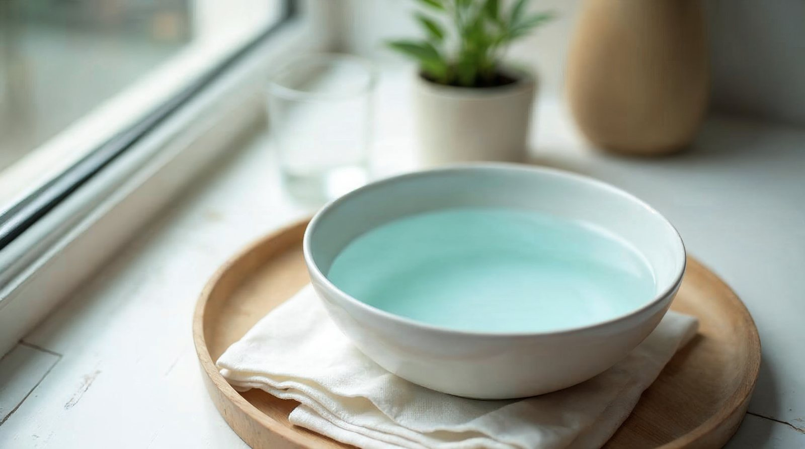
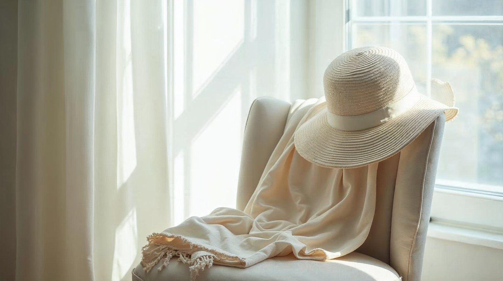
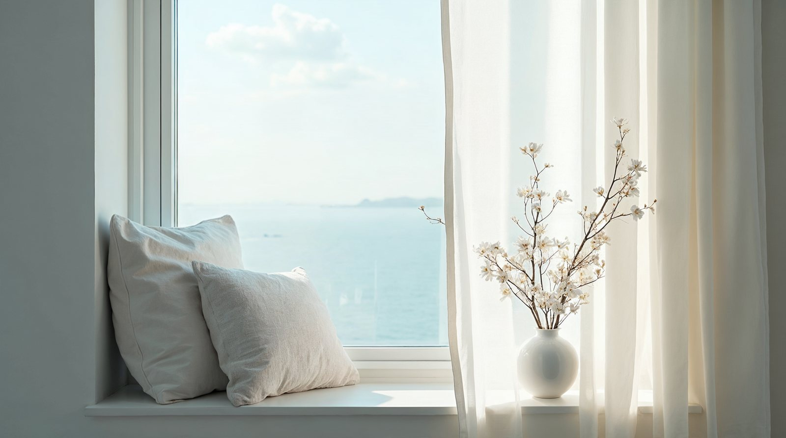
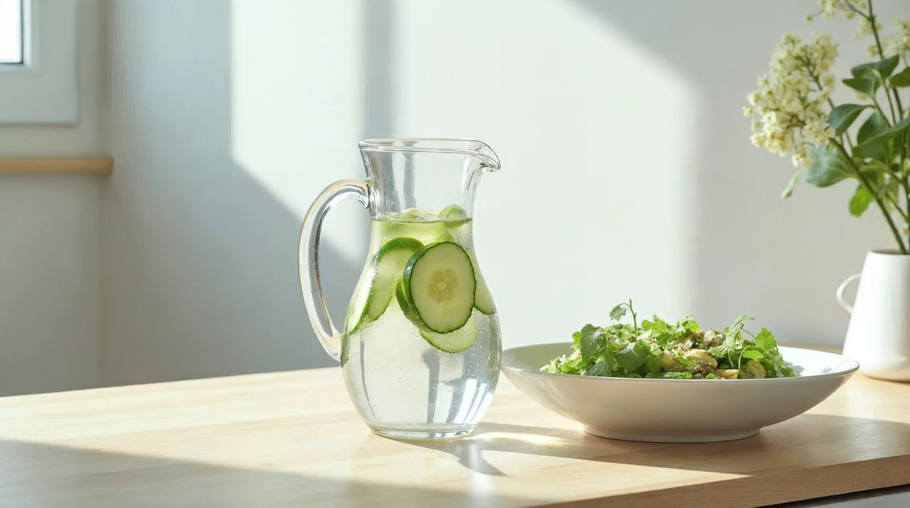
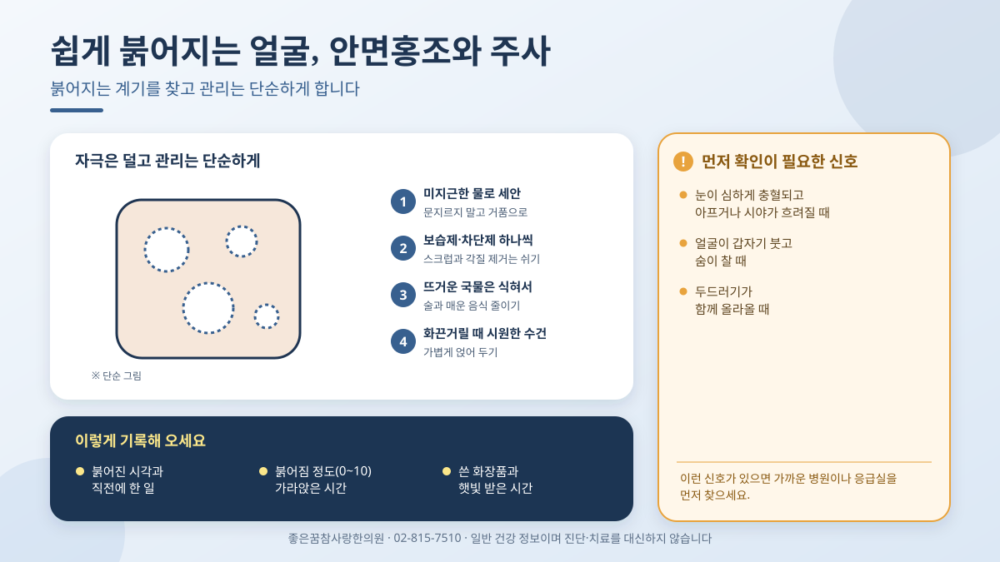

이종호 한의사 감수좋은꿈참사랑한의원 대표원장 (한의사 면허번호 19769)발행 2026-11-26 · 수정 2026-11-27
이 글의 차례
찬 바람을 맞으며 출근하다가 따뜻한 사무실에 들어서면 얼굴이 금세 달아올라요. 볼과 코가 붉게 물들고 화끈거려 손등을 대 보면 뜨겁습니다. 동료가 어디 아프냐고 물을 때마다 괜히 더 얼굴이 빨개지죠. 회식 자리에서는 술 한 잔에도 얼굴이 홍당무가 되어 마시지 않은 척하기도 어렵고요.
진료실에서는 화장으로 가려도 오후가 되면 다 올라온다는 말씀, 사람 앞에 서는 게 점점 부담스럽다는 말씀을 들어요. 얼굴은 늘 드러나는 곳이라 마음고생이 생각보다 크거든요. 그 마음부터 먼저 헤아리고 얘기를 시작할게요.
얼굴이 붉어지는 걸 흔히 안면홍조라고 불러요. 누구나 부끄럽거나 더울 때 얼굴이 붉어지죠. 원래 그래요. 그런데 '잠깐 붉어졌다 가라앉는 것'과 '작은 계기에도 자주 붉어지고 그 붉음이 오래 남는 것'은 다른 얘기예요.
뒤의 경우라면 주사(酒皶)라는 피부 질환일 수 있어요. 코끝이 붉어지는 모습 때문에 흔히 딸기코라고도 부르고요. 주사는 술을 많이 마셔서 생기는 병이 아니에요. 술을 거의 마시지 않는 분에게도 흔하고, 체질과 피부 장벽, 혈관의 반응, 생활 환경이 함께 얽혀 나타나거든요.
이 글에서는 붉어짐의 모양을 나눠 보고, 생활에서 계기를 줄이는 방법과 함께 살필 수 있는 것을 정리해 볼게요.
왜 얼굴이 이렇게 쉽게 붉어질까요
얼굴, 특히 볼과 코에는 가는 혈관이 촘촘하게 모여 있습니다. 더위나 감정, 음식 같은 자극이 오면 이 혈관이 넓어지며 피가 몰려 얼굴이 붉어집니다. 보통은 자극이 사라지면 혈관이 다시 좁아지고 붉음도 가라앉습니다.
주사가 있는 분은 이 혈관이 작은 자극에도 쉽게 넓어지고, 다시 좁아지는 데 시간이 오래 걸립니다. 이런 일이 반복되면 혈관이 늘어난 채로 남아 실핏줄이 비치고, 붉음이 늘 깔린 상태가 됩니다.
피부 장벽도 중요합니다. 피부 겉을 지키는 막이 약해지면 바깥 자극이 쉽게 들어와 따갑고 화끈거리고, 그 자극이 다시 붉어짐을 부릅니다. 세안을 자주 하거나 각질 제거를 자주 하는 분, 여러 가지 화장품을 겹쳐 바르는 분에게서 이런 모습이 흔합니다.
햇빛도 큰 계기입니다. 자외선은 혈관과 피부 장벽을 함께 지치게 해 주사를 악화시키는 대표적인 요인으로 알려져 있습니다. 실내에 오래 있는 분도 창가 자리라면 햇빛을 생각보다 많이 받습니다.
한의학에서는 얼굴이 붉고 화끈거리는 모습을 열이 위로 오르는 상열(上熱)로 보아 왔습니다. 위장의 열이 얼굴로 오른다고 보기도 하고, 아래는 차고 위는 뜨거운 상열하한(上熱下寒)의 모습으로 설명하기도 했습니다. 얼굴만이 아니라 몸 전체의 열과 냉의 분포를 함께 보려는 시선입니다.
안면홍조, 주사, 다른 붉어짐은 어떻게 다를까요
부끄럽거나 더울 때 잠깐 붉어졌다가 금세 가라앉는 것은 자연스러운 홍조입니다. 일상에 크게 불편이 없다면 생활 속 계기만 조금 줄여도 충분한 경우가 많습니다.
주사는 붉어짐이 잦고 오래 남는다는 점이 다릅니다. 볼과 코, 이마, 턱 가운데 쪽이 주로 붉어지고, 실핏줄이 비치거나 여드름처럼 붉은 뾰루지가 올라오기도 합니다. 화끈거림과 따가움이 함께 오고, 눈이 충혈되거나 뻑뻑한 분도 있습니다.
여드름과는 모양이 다릅니다. 주사의 뾰루지는 붉은 바탕 위에 올라오고, 여드름에서 흔한 좁쌀 같은 하얀 면포가 잘 보이지 않습니다. 여드름 관리법을 그대로 따라 하면 오히려 자극이 커질 수 있어 구분이 중요합니다.
지루성 피부염은 코 옆과 눈썹, 이마에 붉음과 함께 기름진 각질이 일어나는 모습입니다. 주사와 함께 오는 경우도 있어 어느 쪽이 더 앞에 있는지 살핍니다.
갱년기의 열감은 얼굴뿐 아니라 목과 가슴까지 확 달아오르고 땀이 쏟아지는 순서를 보입니다. 혈압이 높거나, 일부 약을 드시거나, 갑상선 기능이 높을 때도 얼굴이 쉽게 붉어질 수 있어 드시는 약과 검진 결과를 함께 봅니다.

예를 들면 이런 모습입니다
실제 어느 분의 사연이 아니라, 진료실에서 자주 보는 모습을 바탕으로 그려 본 장면입니다.
예를 들어 겨울에 바깥과 실내를 자주 오가는 직장인이라면, 출근 직후와 점심 뒤에 얼굴이 가장 붉어진다고 하십니다. 이럴 때는 실내에 들어서자마자 겉옷과 목도리를 벗어 열이 빠져나갈 틈을 주고, 점심은 뜨겁고 매운 국물보다 한 김 식힌 음식으로 바꿔 보는 것부터 시작합니다.
피부 관리를 열심히 하는 분이라면, 아침저녁 세안에 각질 제거와 여러 겹의 화장품까지 꼼꼼히 하는데도 얼굴이 점점 예민해졌다고 하십니다. 이럴 때는 오히려 단계를 줄이는 쪽을 권합니다. 순한 세안제 하나, 보습제 하나, 자외선 차단제 하나로 줄여 보는 것입니다.
손발이 차고 소화가 약한 분이라면, 얼굴은 화끈거리는데 발은 늘 시리다고 하십니다. 몸의 위아래 온도 차이가 큰 모습이라 저녁에 발을 따뜻하게 하고 차가운 음료를 줄이는 생활 약속을 함께 정합니다.
스스로 살펴보는 질문
아래 질문으로 붉어짐의 모양을 정리해 보세요. 진단을 내리는 표가 아니라, 진료실에서 상태를 말로 옮기기 위한 정리표입니다.
- 얼굴이 붉어지는 곳은 볼, 코, 이마, 턱 가운데 어디인가
- 붉어짐이 몇 분 만에 가라앉는가, 몇 시간씩 남는가
- 붉어지게 하는 계기(실내 열기, 술, 매운 음식, 햇빛, 운동, 긴장)는 무엇인가
- 화끈거림이나 따가움, 붉은 뾰루지가 함께 있는가
- 실핏줄이 비치거나 코끝이 두꺼워지는 느낌이 있는가
- 눈이 자주 충혈되거나 뻑뻑한가
계기를 찾는 것이 가장 중요합니다. 사람마다 붉어짐을 부르는 계기가 달라서, 내 계기를 알면 생활에서 줄일 곳이 보이기 시작합니다.
붉어짐을 부르는 흔한 계기들
온도의 급격한 변화가 가장 흔합니다. 찬 바깥에서 따뜻한 실내로 들어설 때, 뜨거운 사우나나 찜질방, 뜨거운 물로 오래 샤워할 때 얼굴이 쉽게 달아오릅니다. 겨울철 난방이 센 실내와 여름철 뙤약볕이 모두 계기가 됩니다.
음식과 음료도 큽니다. 술, 특히 적포도주, 매운 음식, 뜨거운 국물과 커피, 차처럼 뜨겁게 마시는 음료가 흔한 계기로 꼽힙니다. 같은 커피라도 미지근하게 식혀 마시면 덜 붉어지는 분이 있습니다.
피부에 닿는 것도 살펴야 합니다. 알코올이 많이 든 토너, 향이 강한 화장품, 각질 제거제, 스크럽, 뜨거운 물 세안이 피부 장벽을 지치게 합니다. 마스크를 오래 쓰면 안쪽에 열과 습기가 차서 붉어짐이 심해지기도 합니다.
마음의 긴장도 계기입니다. 발표나 회의처럼 긴장되는 순간 얼굴이 붉어지고, 붉어질까 걱정하는 마음이 다시 긴장을 키우는 고리가 생기기도 합니다. 잠이 모자란 날 더 쉽게 붉어진다는 분도 많습니다.

계절마다 달라지는 얼굴
겨울은 붉어짐이 잦아지는 계절입니다. 찬 바람에 혈관이 좁아졌다가 따뜻한 실내에서 한꺼번에 넓어지기를 하루에도 몇 번씩 되풀이합니다. 난방으로 공기가 건조해지면 피부 장벽도 함께 약해져 따가움이 늘어납니다.
봄에는 햇빛이 강해지고 꽃가루와 미세먼지가 많아져 얼굴이 예민해지기 쉽습니다. 여름에는 더위와 땀, 자외선이 겹치고, 마스크 안쪽에 열이 차서 볼과 코가 쉽게 달아오릅니다. 가을에는 일교차가 커지면서 아침저녁으로 붉어짐이 오르내립니다.
그래서 저는 계절이 바뀔 무렵 관리법을 조금씩 바꿔 보자고 말씀드립니다. 겨울에는 보습을 조금 더 두텁게, 여름에는 자외선 차단과 땀 관리를 조금 더 꼼꼼히 하는 식입니다.

붉어진 얼굴이 마음에 남기는 것
얼굴이 자주 붉어지는 분들은 사람을 만나는 자리를 피하게 되었다는 이야기를 자주 하십니다. 회의에서 말을 꺼내기 전에 이미 얼굴이 달아오를까 걱정되고, 그 걱정이 다시 얼굴을 붉게 만듭니다.
이럴 때는 얼굴만 보지 않고 긴장의 흐름도 함께 살핍니다. 숨을 길게 내쉬며 어깨의 힘을 빼는 연습, 중요한 자리 전에 미지근한 물 한 잔 마시기처럼 작은 방법이 도움이 되는 경우가 있습니다. 얼굴이 붉어지는 것은 내 잘못이 아니라는 것을 기억해 주셨으면 합니다.
먼저 이렇게 여쭙니다
처음 오신 분이든 다시 오신 분이든 저는 먼저 양손을 올려 달라고 말씀드립니다. 맥부터 짚으며 언제부터 얼굴이 붉어지기 시작했는지, 그 무렵 바뀐 것이 있는지를 여쭙습니다. 새로 쓰기 시작한 화장품, 연고, 약, 이사나 계절 변화 같은 것들입니다.
스테로이드 연고를 얼굴에 오래 바른 적이 있다면 꼭 알려 주세요. 그다음 붉어지는 계기와 시간대, 화끈거림과 뾰루지, 눈 증상을 차례로 확인합니다. 피부과에서 받은 진단과 처방이 있다면 그 내용도 함께 봅니다.
혀와 얼굴·손발의 온도를 보고, 소화와 대변, 잠과 월경의 흐름까지 함께 여쭈며 몸 전체의 열이 어떻게 나뉘어 있는지 가늠합니다.
일상에서 먼저 해 볼 수 있는 것
주사는 계기를 줄이고 피부 장벽을 지키는 생활이 바탕이 됩니다. 한꺼번에 다 바꾸기보다 하나씩 시작해 보세요.
- 세안은 미지근한 물로 하루 한두 번, 순한 세안제로 문지르지 않고 거품으로 씻습니다
- 각질 제거와 스크럽은 쉬고, 화장품은 보습제 하나와 자외선 차단제 하나로 단순하게 합니다
- 자외선 차단제는 계절과 상관없이 바르고, 모자와 양산을 함께 씁니다
- 뜨거운 음료와 국물은 한 김 식혀 먹고, 술과 매운 음식은 줄입니다
- 실내에 들어서면 겉옷과 목도리를 바로 벗고, 사우나와 뜨거운 샤워는 짧게 합니다
- 얼굴이 화끈거릴 때는 시원한 물을 적신 수건을 가볍게 얹습니다
새 화장품을 쓸 때는 귀 뒤나 턱 아래에 며칠 먼저 발라 보고 괜찮을 때 얼굴에 쓰세요. 성분이 단순하고 향이 없는 제품이 덜 자극적인 경우가 많습니다.
얼굴에 얼음을 직접 대는 것은 피해 주세요. 차가운 자극이 지나면 혈관이 다시 넓어지며 더 붉어질 수 있습니다. 시원한 정도면 충분합니다.
잠과 소화도 함께 챙깁니다. 잠이 모자라거나 속이 더부룩한 날 붉어짐이 심하다는 분이 많아, 일어나는 시각을 고정하고 저녁은 가볍게 일찍 마치는 습관을 함께 권합니다.

한의원에서 함께 살필 수 있는 경우
진단이 필요하거나 증상이 빠르게 변한다면 피부과 진료가 먼저입니다. 그 위에서 한의원이 함께 살필 수 있는 경우는 이런 때입니다.
- 피부과 치료를 이어 가면서 생활의 계기와 몸의 열감을 함께 살피고 싶은 경우
- 얼굴은 화끈거리는데 손발이 차고 소화가 불편한 경우
- 잠이 모자라거나 긴장한 날마다 붉어짐이 심해지는 흐름이 보이는 경우
- 갱년기 무렵 얼굴 열감과 붉어짐이 함께 늘어난 경우(산부인과 진료와 함께)
진찰을 마친 뒤에는 침, 한약 상담, 생활 약속처럼 함께 할 수 있는 것을 정합니다. 얼굴 피부가 예민한 시기에는 자극이 덜한 방법을 고르고, 한약은 드시는 약을 확인한 뒤 상의합니다. 어떤 방법이든 결과를 미리 약속드리기보다, 다음 진료에서 붉어짐과 화끈거림이 어땠는지 함께 보며 조정합니다.
이렇게 기록해 오시면 상담이 쉬워집니다
붉어짐은 계기와 함께 적어야 모양이 보여요. 일주일만 짧게 적어 와 주세요. 같은 자리, 같은 조명에서 찍은 사진 몇 장도 도움이 돼요.
- 붉어진 시각과 그 직전에 한 일(실내 입실, 식사, 술, 운동 등)
- 붉어짐의 정도(0~10)와 가라앉기까지 걸린 시간
- 화끈거림, 따가움, 뾰루지가 있었는지
- 그날 쓴 세안제와 화장품, 햇빛을 받은 시간
- 잠든 시각과 아침 개운함, 소화 상태
일주일을 모아 보면 내 얼굴을 가장 자주 붉게 하는 계기가 한두 가지로 좁혀지는 경우가 많아요. 그 계기부터 함께 줄여 가 보는 거예요.
몸의 열감과 잠, 소화를 살피는 건 제가 맡을게요. 대신 하나만 부탁드려요. 세수할 때 뜨거운 물 대신 미지근한 물을 써 주세요. 딴 건 하시던 대로 편하게 하셔도 돼요. 얼굴은 하루에도 몇 번씩 물에 닿으니, 작은 습관 하나가 차곡차곡 쌓이는 자리거든요.
붉어진 얼굴 때문에 사람 앞에 서기가 망설여지는 마음, 충분히 이해해요. 혼자 거울 앞에서 애태우기보다 한 번 같이 들여다보세요. 다음에 오시면 그 기록과 사진부터 함께 볼게요. 궁금한 건 그냥 편하게 물어보세요.
이런 증상은 먼저 확인이 필요합니다
- 눈이 심하게 아프거나 시야가 흐려지는 경우
- 얼굴·입술이 갑자기 붓거나, 붉어지면서 숨이 차는 경우
이런 신호가 있으면 한의원보다 가까운 병원이나 응급실을 먼저 찾으세요.
함께 읽으면 좋은 글
- 코 옆과 눈썹이 붉고 각질이 일어나는 얼굴 지루성 피부염은 어떻게 살피나요?
- 얼굴이 달아오르고 땀이 갑자기 날 때는 어떤 점을 살펴보나요?
- 잠이 부족하면 피부가 푸석하고 트러블이 나는 이유는 무엇인가요?
- 찬 바람을 쐬거나 찬물에 닿으면 피부가 부풀어 오를 때는 어떻게 살피나요?

여쭙는 것
- 처음 오신 분이든 다시 오신 분이든 저는 먼저 양손을 올려 달라고 말씀드립니다.
- 맥부터 짚으며 언제부터 얼굴이 붉어지기 시작했는지, 그 무렵 바뀐 것이 있는지를 여…
- 새로 쓰기 시작한 화장품, 연고, 약, 이사나 계절 변화 같은 것들입니다.
생활에서 해 볼 것
- 세안은 미지근한 물로 하루 한두 번, 순한 세안제로 문지르지 않고 거품으로 씻습니다
- 각질 제거와 스크럽은 쉬고, 화장품은 보습제 하나와 자외선 차단제 하나로 단순하게…
- 자외선 차단제는 계절과 상관없이 바르고, 모자와 양산을 함께 씁니다
한의원에서 함께 살필 것
- 피부과 치료를 이어 가면서 생활의 계기와 몸의 열감을 함께 살피고 싶은 경우
- 얼굴은 화끈거리는데 손발이 차고 소화가 불편한 경우
- 잠이 모자라거나 긴장한 날마다 붉어짐이 심해지는 흐름이 보이는 경우
먼저 확인이 필요한 신호
- 눈이 심하게 아프거나 시야가 흐려지는 경우
- 얼굴·입술이 갑자기 붓거나, 붉어지면서 숨이 차는 경우
한눈에 보는 표
| 구분 | 핵심 |
|---|---|
| 생활에서 해 볼 것 | 세안은 미지근한 물로 하루 한두 번, 순한 세안제로 문지르지 않고 거품으로 씻습니다 각질 제거와 스크럽은 쉬고, 화장품은 보습제 하나와 자외선 차단제 하나로 단순하게 합니다 |
| 한의원에서 함께 살필 것 | 피부과 치료를 이어 가면서 생활의 계기와 몸의 열감을 함께 살피고 싶은 경우 얼굴은 화끈거리는데 손발이 차고 소화가 불편한 경우 |
| 먼저 확인이 필요한 신호 | 눈이 심하게 아프거나 시야가 흐려지는 경우 얼굴·입술이 갑자기 붓거나, 붉어지면서 숨이 차는 경우 |
자주 묻는 질문
주사는 술을 많이 마셔서 생기는 건가요?
그렇지 않습니다. 술을 거의 마시지 않는 분에게도 흔합니다. 다만 술은 얼굴을 붉게 하는 흔한 계기라서, 주사가 있다면 줄이는 편이 좋습니다.
여드름 관리법을 그대로 따라 해도 될까요?
주사와 여드름은 모양이 비슷해 보여도 관리 방향이 다릅니다. 각질 제거나 강한 세안제는 주사가 있는 피부를 더 예민하게 만들 수 있어, 먼저 어느 쪽인지 진찰로 확인하시길 권합니다.
피부과 연고를 바르고 있는데 한의원 진료를 함께 받아도 되나요?
함께 받으실 수 있습니다. 처방받은 연고와 약은 그대로 이어 가시고, 이름과 쓰는 방법을 알려 주세요. 한의원에서는 생활의 계기와 몸의 열감, 잠과 소화를 함께 살핍니다.
얼굴이 화끈거릴 때 얼음찜질을 해도 되나요?
얼음을 직접 대기보다 시원한 물에 적신 수건을 가볍게 얹는 정도를 권합니다. 너무 차가운 자극은 지나고 나면 오히려 다시 붉어질 수 있습니다.
화장으로 가리는 게 피부에 안 좋을까요?
가리는 것 자체보다 무엇을 얼마나 겹쳐 바르는지가 중요합니다. 성분이 단순하고 향이 없는 제품을 얇게 쓰고, 저녁에는 문지르지 않고 순하게 지워 주세요. 새 제품은 귀 뒤에 먼저 발라 보고 쓰시길 권합니다.
좋은꿈참사랑한의원은 재진 때 지난번 이야기부터 이어서 여쭙니다. 진료시간과 예약은 오시는 길에서 확인하세요.
어디서 상담받을 수 있나요?
좋은꿈참사랑한의원은 서울 동작구 만양로2길 2 신성빌딩 3층·5층(서울 동작구 상도동, 7호선 상도역 3번 출구 근처)에 있습니다. 한의사 3명(이종호 대표원장, 조영기 수석진료원장, 정원영 진료원장)이 진료합니다. 진료시간은 평일 09:30~20:00(점심 13:00~14:00), 토·일·공휴일 09:30~15:00이며, 방문 전 전화로 확인을 권합니다. 예약은 네이버 예약, 카카오톡 상담, 전화 02-815-7510로 받습니다.
이 글은 일반적인 건강 정보이며 개인의 진단이나 치료를 대신하지 않습니다. 증상이 있거나 복용 중인 약이 있다면 진료를 통해 확인하세요. 치료 효과는 개인마다 다를 수 있습니다.
작성 기준: 일반적으로 알려져 있는 건강 정보를 참고해 정리했습니다(대표원장 감수). 증상 기록은 1~2주 동안 하루 1회, 비슷한 시간에 적어 오시면 지난 상태와 비교하기 쉽습니다.